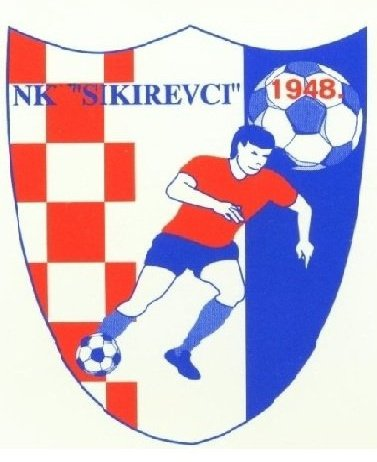

Nogometni klub
NK Sikirevci trenutno se natječu u međužupanijskoj ligi Slavonski Brod - Požega. Klub ima važnu sportsku i društvenu ulogu te predstavlja ponos mjesta i lokalne zajednice.
Zaštitna boja kluba je crvena, koja simbolizira borbenost, energiju i zajedništvo igrača i navijača.
Grb kluba sastoji se od šahovnice, bijele i plave boje, godine 1948, imena kluba te prikaza jednog igrača, čime se naglašava identitet, tradicija i pripadnost kluba.

Međužupanijska liga Slavonski Brod - Požega
Crvena boja kao simbol snage, borbenosti i zajedništva.
Šahovnica, bijela i plava boja, godina 1948, ime kluba i prikaz igrača.